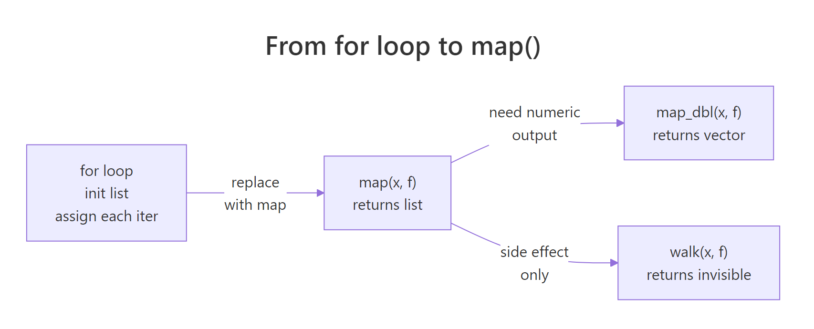
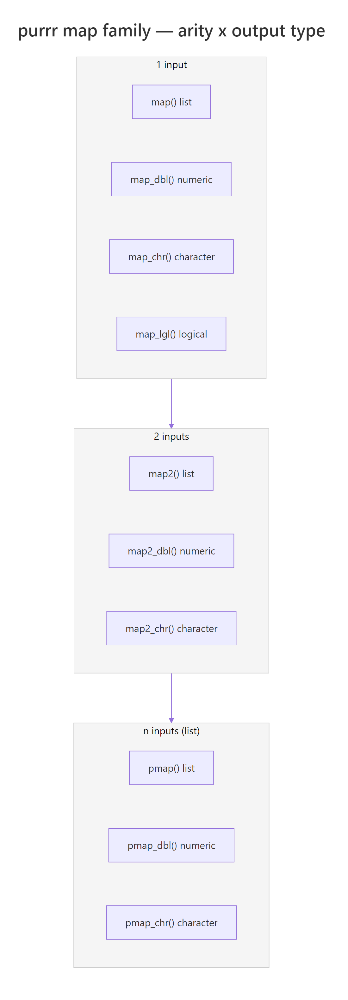
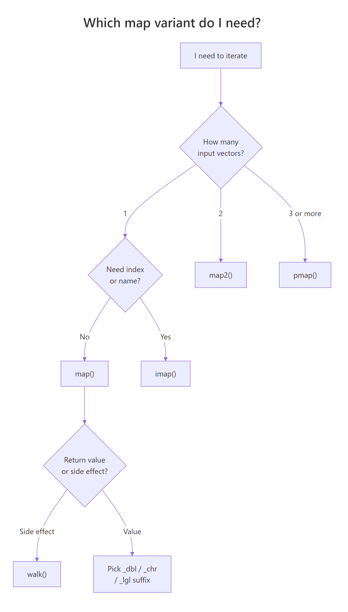

purrr map() in R: Every Variant Explained With the Mental Model That Makes Them Click
purrr's map family replaces for loops with composable one-liners — map() handles one input, map2() pairs two, pmap() scales to any number, and _dbl/_chr/_lgl suffixes guarantee the output type you expect.
There are roughly 30 functions in the map family, but you don't need to memorise them. Once you see the two-dimensional grid behind the names — how many inputs on one axis, what output type on the other — every variant becomes obvious. This tutorial walks every useful member of the family with runnable examples so you leave with a working mental model, not a cheat-sheet.
What does map() actually do, and why replace for loops?
If you've ever written a for loop just to build up a list of results, map() is the cleaner replacement. It takes a vector, applies a function to every element, and collects the answers into a list — in one line, with no counter variable and no pre-allocation. Here's the side-by-side: compute the mean of every column in mtcars, first the long way, then the map() way.
Both expressions produce the same named list of column means, but map() removes every piece of loop ceremony. You don't pre-allocate the container, you don't track an index, and you don't copy the result into a slot — map() returns the assembled list as its value, so you can pipe it straight into the next step.

Figure 1: The same iteration pattern — apply a function to every element — expressed three ways. The return type changes; the logic doesn't.
The second argument to map() is a function. You can pass a named function like mean, or inline a tiny one with R 4.1's backslash-lambda \(x) ..., or with purrr's formula shorthand ~ .x * 2 (where .x is the current element).
All three return the same 5-element list. Pick whichever reads best: use a named function when the logic has a name worth keeping, the \(x) lambda for anything longer than a single expression, and the ~ .x formula for tiny one-liners.
\(x) syntax is standard R 4.1+, supports multiple arguments cleanly, and readers unfamiliar with purrr's .x placeholder can still read it. Save the ~ formula shorthand for very short expressions.Try it: Use map() to square every element of 1:5. The result should be a list of 5 numbers.
Click to reveal solution
Explanation: map() applies \(x) x ^ 2 to each element and wraps the five results in a list. If you want a plain numeric vector instead of a list, use map_dbl() — that's the next section.
How do the map_*() type suffixes guarantee the output you expect?
map() always returns a list. Most of the time you actually want a plain atomic vector — a numeric, a character, or a logical. That's what the type-suffix variants are for. map_dbl() returns a double vector, map_int() an integer, map_chr() a character, map_lgl() a logical. They do the same iteration as map(), but they unwrap the result and check that every piece matches the promised type.
Compare that to the list you got in the last section — same numbers, but now you can drop the result straight into sort(), plot(), or arithmetic without unlisting first. The named-vector format also makes col_means["mpg"] work cleanly.
map_chr() ran sprintf() on each column's mean and collected the 11 strings into a single named character vector — ready for a plot legend, a report heading, or a paste0() concatenation.

Figure 2: The map family is a 2D grid. Pick a row (how many inputs) and a column (output type) and the function name writes itself.
The suffix isn't cosmetic — it's a promise the function enforces. If your function returns something that isn't the promised type, map_dbl() errors loudly rather than silently returning garbage.
Instead of quietly coercing "two" into NA or a number, map_dbl() stops and tells you exactly which element broke the contract. That's a feature: an explicit failure beats a silent wrong answer every time.
map() and convert afterwards. Don't wrap map_dbl() in tryCatch() to paper over type mismatches — fix the upstream function instead.map() everywhere because "it always works" defeats the point — the suffixes exist so type errors surface at the iteration site, not three functions downstream where they're hard to debug.Try it: Use map_int() to return the number of characters in each element of c("dog", "horse", "bee"). The answer should be an integer vector of length 3.
Click to reveal solution
Explanation: nchar() returns an integer for each string, and map_int() collects the three answers into an integer vector. You could also write this as map_int(ex_words, nchar) — when the function is a one-argument named function, you can drop the lambda entirely.
When do you need map2() to iterate over two inputs in parallel?
map() works beautifully when you're iterating over one vector. But plenty of problems pair two vectors — sample sizes with seeds, means with standard deviations, column names with column values. map2() is the version that walks two inputs in lockstep, feeding the i-th element of each to your function on every step.
Each call to rnorm() uses the matching element from both vectors — the first call gets mean = 0, sd = 1, the second gets mean = 5, sd = 2, and so on. The result is a length-4 list where each slot holds a 5-number sample from a different normal distribution.
Inside the lambda, you can name the arguments anything (m and s here) or use purrr's formula shorthand where .x is the first input and .y is the second.
map2_dbl() works exactly like map2() but promises a double vector output — the same contract as map_dbl(), extended to two inputs. Every type suffix from the previous section has a map2_ cousin.
c(1,2,3,4) * c(10,20,30,40) returns the same answer without purrr. Reach for map2() when the per-element operation is a function call that isn't already vectorised — random draws, model fits, custom transformations.Try it: Multiply c(2, 4, 6) by c(10, 100, 1000) elementwise and return the result as a double vector.
Click to reveal solution
Explanation: map2_dbl() pairs ex_a[i] with ex_b[i] for each i, multiplies them, and collects the three products into a double vector. The defining feature of every map2_* variant is that the function takes two arguments instead of one.
How does pmap() scale iteration to any number of arguments?
There's no map3() or map4() — because pmap() generalises the whole idea. Instead of accepting 2, 3, or 4 separate vectors, pmap() takes one list whose elements are the vectors you want to iterate over in parallel. Three inputs, ten inputs — same syntax.
The cleanest pattern is to name the list elements to match your function's argument names. purrr will wire them up for you automatically.
The first rnorm() call got n = 3, mean = 0, sd = 1; the second got n = 4, mean = 10, sd = 2; the third got n = 5, mean = 20, sd = 3. Because the list names match rnorm's argument names, you didn't need a lambda at all — pmap passed them through directly.
A really powerful variant: since a tibble is just a named list of equal-length vectors, you can pass a whole tibble of experiment specifications straight to pmap().
Each row of spec_tbl became one call to the lambda; the lambda drew n random values from a normal with the row's mean and sd, then returned their observed mean. pmap_dbl() collected the three observed means into a numeric vector — and because it's _dbl, you get a flat atomic vector instead of a list of doubles.
If you don't want to name arguments, purrr's formula shorthand supports positional placeholders ..1, ..2, ..3 for any number of inputs.
..1 is the first list element, ..2 the second, and so on. It works, but the named-argument style from earlier is usually easier to read once you have more than two inputs.
Try it: Use pmap_chr() to build sentences of the form "<name> scored <score> on the <subject> test" from three equal-length vectors.
Click to reveal solution
Explanation: The named list wires name, score, and subject into the lambda by argument name, and pmap_chr() collects the three formatted strings into a character vector. Using a named list is much clearer than ..1/..2/..3 once you have more than two inputs.
What is imap() for, and why use it instead of manual indices?
Sometimes the function you're applying needs to know where each element came from — its position, its name, or both. You could do that with map2() by passing seq_along(x) as the second input, but imap() does it for you. It's exactly equivalent to map2(.x, names(.x), .f) when the input has names, and map2(.x, seq_along(.x), .f) when it doesn't.
The lambda received two arguments: val (the list element) and key (the name). imap_chr() pasted them together and returned a named character vector. You didn't have to extract names(populations) or track an index counter — imap did it for you.
If the input has no names, imap() uses the integer position instead.
Same pattern, different second argument. imap() silently switches between "use names" and "use indices" depending on whether the input is named — so your code reads the same whether you're looping a named list or a plain vector.
imap() is the R equivalent of Python's enumerate(). Any time you find yourself writing for (i in seq_along(x)) to get both the element and its position, reach for imap instead. It's one function call, it respects names when they exist, and it plugs straight into a tidyverse pipeline.Try it: Given a named numeric vector, build "city (value)" labels with imap_chr().
Click to reveal solution
Explanation: imap_chr() hands the lambda both the value and its name on each iteration, and paste0() builds the label. This is the cleanest way to build "label: value" strings from a named vector.
When should you use walk() instead of map()?
Sometimes you iterate purely for a side effect — printing, saving a plot, writing a file, logging a message — and you don't care about the return value. Using map() for that works, but it allocates a list of NULLs you'll throw away and it prints that list if you run it at the console. walk() is the "for its side effects" variant: it calls the function on every element, ignores the return values, and returns the input invisibly so pipelines keep flowing.
Three lines of output, no list of NULLs cluttering your console. walk() evaluated the lambda for its printing effect, discarded the return values, and invisibly returned mtcars_by_cyl — so you could even pipe the result into another step if you wanted to.
Like map2() and pmap(), walk() has walk2() and pwalk() siblings for two or n inputs.
In a real R session you'd call write.csv(df, fname) or ggsave(fname, plot) inside the lambda. Here we print what would happen so you can see the pairing — each filename lines up with its matching data frame, exactly as map2() would.
write.csv() technically execute but the files vanish on page reload and there's no "Downloads" folder to find them in. That's why the example above prints instead of writing. In your local RStudio, walk2(filenames, data_list, write.csv) is the real thing.Try it: Use walk() to print each greeting in a list with a — prefix on its own line.
Click to reveal solution
Explanation: cat() prints to the console and returns NULL — exactly the side-effect-only pattern walk() is designed for. Using map() here would work but would also print a useless list of three NULLs below the greetings.
Practice Exercises
These capstones combine multiple variants from the tutorial. Each is solvable with concepts you've already seen. Use distinct variable names (prefixed my_) so exercises don't overwrite tutorial state.
Exercise 1: Summary report from a list of data frames
You have a list of three small data frames. Use map_int() to compute each row count, then imap_chr() to build a one-line summary string per data frame, then walk() to print each summary. The final printed output should have three lines.
Click to reveal solution
Explanation: map_int(my_dfs, nrow) returns a named integer vector of row counts. imap_chr() then turns each count into a sentence using the name of the data frame. Finally walk() prints each sentence as a side effect. You could chain these with |> if you prefer a single expression.
Exercise 2: Monte Carlo experiment grid with pmap()
You have a tibble of experiment specifications — six combinations of sample size, distribution mean, and standard deviation. For each row, draw a random sample from a normal distribution, compute its observed mean, and return all six observed means alongside the original specs.
Click to reveal solution
Explanation: Inside mutate(), pmap_dbl() walks the three column vectors in parallel. On each iteration the lambda draws n values from rnorm(mean, sd) and returns the observed mean. With n = 100 rows the observed means are much closer to the true means — the classic law-of-large-numbers effect.
Exercise 3: Labelled output with imap() and walk2()
Given a list of model specifications (each a nested list with family and formula), build a labelled printout where each spec appears below a numbered heading like === Model 1: linear ===.
Click to reveal solution
Explanation: imap_chr() builds one heading string per spec, using the list name as the model label. Then walk2() walks the headings and specs in parallel, printing each heading followed by the model's family and formula. This is the pattern you'd use to build progress logs or formatted reports.
Complete Example: a mini Monte Carlo study
Here's how the pieces fit together in a realistic workflow. The goal is to compare how well the sample mean recovers the true mean at three different sample sizes (n = 10, 50, 200) for two distributions (standard normal and exponential).
We'll use pmap() to iterate the experiment grid, map_dbl() to summarise each draw, and walk() to print a formatted per-distribution report.
Every column in the results tibble came from a different map variant. pmap() ran the experiments, map_dbl() extracted the observed mean and SD from each sample, and plain vectorised arithmetic handled abs_error. Notice the sample column — it's a list-column, one random sample per row, preserved for inspection. That's the tidyverse's native way of holding "one object per row."
Finally, print a per-distribution summary using walk() on a split of the tibble.
This is the kind of workflow purrr is built for. Each map variant has one job — pmap for the experiment grid, map_dbl for the scalar summaries, walk for the side-effect printing — and they all compose into a single readable pipeline.
Summary
Pick the variant by asking three questions: how many inputs?, do I need the index or name?, and do I want a return value or a side effect? The table below is the whole map family in one grid.

Figure 3: A three-question decision flow that narrows 30+ map functions down to one.
| Variant | Inputs | Returns | Use when |
|---|---|---|---|
map() |
1 | list | Output type varies, or you want a list |
map_dbl() |
1 | double vector | Every call returns one double |
map_int() |
1 | integer vector | Every call returns one integer |
map_chr() |
1 | character vector | Every call returns one string |
map_lgl() |
1 | logical vector | Every call returns TRUE/FALSE |
map2() / map2_* |
2 | list or typed vector | Iterating two paired vectors |
pmap() / pmap_* |
n (list) | list or typed vector | 3+ inputs, or a tibble of specs |
imap() / imap_* |
1 + index | list or typed vector | You need the name or position alongside the value |
walk() |
1 | input (invisibly) | Side effects only — printing, saving, logging |
walk2() / pwalk() |
2 or n | input (invisibly) | Multi-input side effects |
Key takeaways
map()is for one input;map2()pairs two;pmap()scales to any number.- The
_dbl/_int/_chr/_lglsuffix turns the list output into a flat atomic vector — and enforces the type. imap()is the R equivalent of "enumerate" — use it whenever you'd reach forseq_along()ornames()inside a manual loop.walk()is for side effects: no list ofNULLs, returns the input invisibly so pipelines keep flowing.- When in doubt, name your
pmap()list elements to match the target function's argument names — it eliminates lambdas entirely.
References
- Wickham, H. — Advanced R, 2nd Edition. Chapter 9: Functionals. Link
- Wickham, H. & Grolemund, G. — R for Data Science, 2nd Edition. Chapter 27: Iteration. Link
- purrr documentation —
map()reference. Link - purrr documentation —
map2()andpmap()reference. Link - purrr documentation —
imap()reference. Link - Stanford DCL — Functional Programming with purrr, parallel iteration chapter. Link
- Wickham, H. — Advanced R, 1st Edition archive on functional style. Link
Continue Learning
- Functional Programming in R — the broader paradigm that makes
mapfeel natural: first-class functions, pure functions, and composition. - Writing R Functions — how to write clean functions for the
.fargument you keep passing to every map variant. - dplyr Basics — the natural companion to purrr;
mutate()+pmap()is the workflow for per-row computations on tibbles.